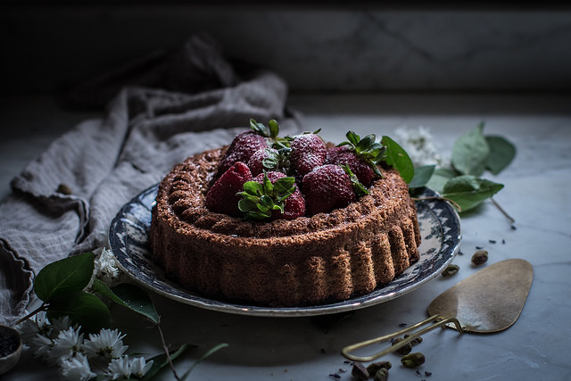
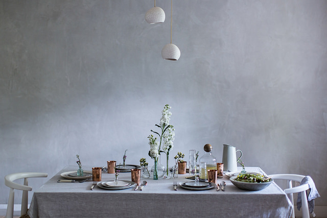
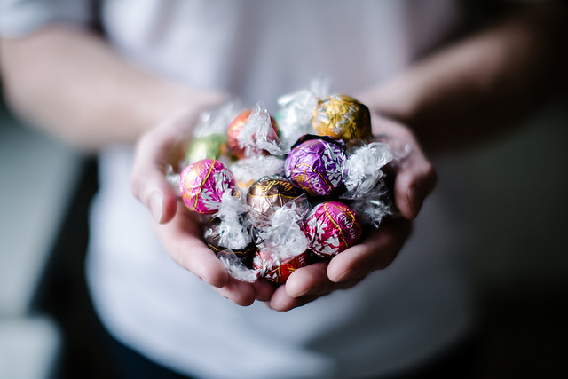

PISTACHIO POUND CAKE + LAVENDER SUGAR STRAWBERRIES FROM “SWEETER OFF THE VINE”

Today I have a recipe from Yossy Arefi’s new seasonal baking book “Sweeter Off the Vine” for you: a tender pistachio poundcake topped with lavender sugar macerated strawberries. The book is a celebration of baking with ripe, seasonal fruit from rhubarb to plums, and it’s full of flavor combinations that leave you rushing to the kitchen/kicking yourself for not thinking of them.
Read More
THE ESSENTIAL INGREDIENTS OF AN INSPIRED GATHERING & ASPARAGUS + RICOTTA + GARLIC SCAPE PESTO FLATBREAD

As many of you who follow me on Instagram know, I’m a cat lady. It all started with my childhood cat, a temperamental, sleek black cat named G. Just G. He was a rescue that upon regaining his strength showed his true colors as a creature that bites that hand that feeds yet desperately wants love & affection. As a teenager, I deeply related to that cat; we were kindred spirits. Over the years since G I’ve had Olive, Critter Lee, Gremlin, and now we have my two boys, the cuddliest of the bunch, that we adopted nearly a year ago as kittens: Kohi & Miruku (their names mean coffee and milk respectively in Japanese—we’re cheesy, I know). They make me happy when I’m sad, calm when I’m stressed, and laugh when I’m angry. So, yes, I had a birthday party for my cats. That’s what you’re looking at here. Well, that and photos of them from kitten to now.
Read More
Candy truffles

We’re remodeling our entire home at the moment (pregnancy induced nesting instinct gone arguably awry), and I haven’t been living there since January. Homesick doesn’t even begin to describe the feeling. The white oak floors were finished while we were in Japan which means that while I can’t move back into the rest of the house (no sinks or showers!), I can move back into my work space: the kitchen. These roasted banana & buttermilk cupcakes with Lindt LINDOR truffle filling & fluffy marshmallow frosting (a.k.a. 7 minute frosting) is the first recipe I created in my own kitchen since being back, and they’re a celebration of both truffles (tomorrow is national truffle day!) and of the comforts of home.
Read More
About Me
My name is Beth, Elizabeth Evelyn to be exact. A native Tennessean, I was born in the South. I didn’t care for being Southern, but I grew up. And when you grow up you get eyes in your head. And what I saw was myself in the South and the South in me. It’s a broken place, and its richness lies in its brokenness. It’s an awfully human place. A bloody place. A pig fat place. One morning you wake up, look in the mirror, and see that the river and mountains and murder ballads are in you. They are you. You’re them. And you know its nonsense to say otherwise. I am, for better or worse, some strange breed of Southern.
I went further south after high school—swamps & Spanish moss south—studying philosophy & writing in the low country at Loyola University New Orleans where I had religious experiences in the form of oysters on the half shell swimming in Tabasco, brown paper bags of crawfish, muffulettas from Central Grocery, and midnight beignets at Café du Monde. In the summers I backpacked in Europe on a shoe string and spent most of my time in a small village in the Netherlands eating homemade bread and stroop waffles at a place called L’abri, which translates as “shelter” from French. It was there, spending afternoons in the kitchen helping to prepare the communal meals we ate around a large table, meals punctuated with the questions of being (par for the course at L’abri), that I rediscovered a love of cooking that originated with my grandmother who passed away when I was 14. Her kitchen & its fine patina of flour came back to me, a recalled dream. That’s when I began to cook in earnest. I was 17.